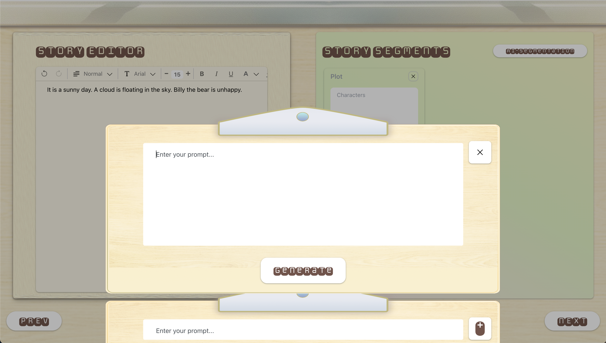
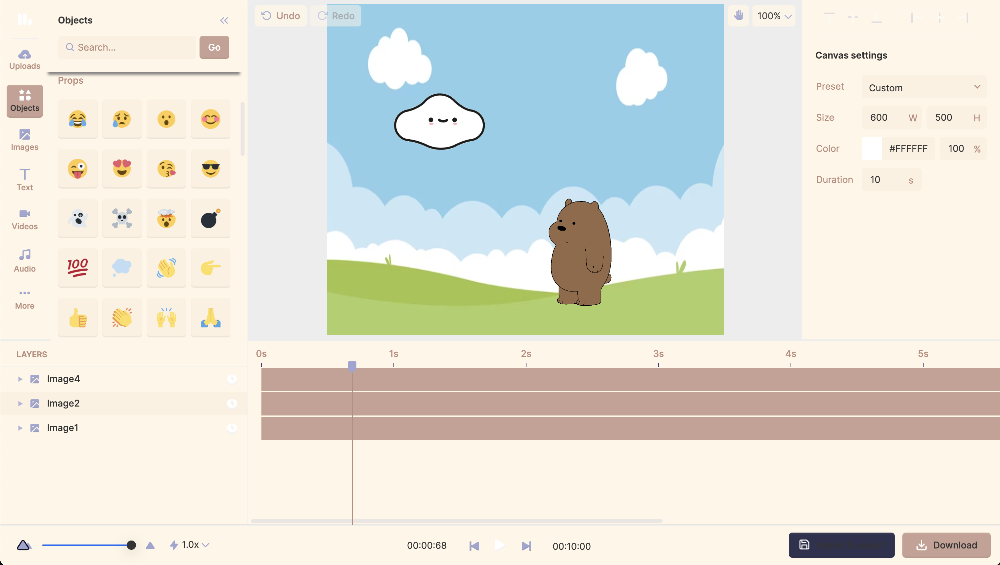
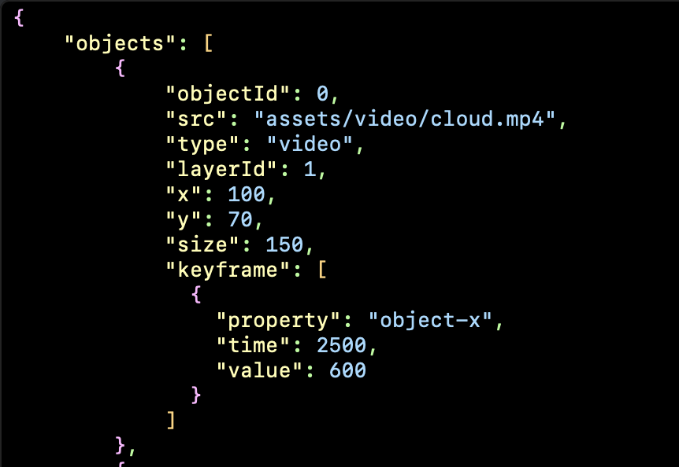

最近参与了一个HCI实验室项目的LLM应用开发部分，在不涉及敏感信息的前提下记录点开发过程和感想。
项目介绍
项目目的和conceptual的说明略，只能讲讲技术性的东西。
这个应用的主要功能是「将用户输入的故事文本初步转化为动画，并允许用户个性化修改」。
下面是简陋的前端页面1和2：
- 第一页提供「chatbot辅助撰写故事」和「AI故事拆分」的功能。后者可以一键把一个较长的故事拆分成几个剧情段落，以方便后续动画生成，也是基于llm实现。
- 第二页是一个动画编辑器。在进入这一页时，应用会自动把上一页生成完毕的动画元素摆放在画布相应位置（即提供动画的初稿），用户可以按需自行添加、修改元素，最后通过右下角导出视频。

项目技术
采用前后端分离，
-
后端基于Python+Django框架，MongoDB作为数据库，用celery库实现异步任务；最开始使用GPT3.5作为文本生成的模型，后因合规性问题转为某开源LLM
-
前端整体基于React.js，动画编辑器的部分因没有合适组件，整合了一个开源但技术略老旧的编辑器网页（html/css/js三件套）
开发过程中的挑战&解决
后端
原先觉得处理第三方llm api的部分会比较麻烦，毕竟之前没有接触过，外加llm的对话性质必然牵涉到一些项目里的异步处理。但后来因为和pm了解了下发现项目体量暂时不大&只是demo阶段，没有分布式问题，所以可以省略很多不必要技术处理，于是这部分倒是很快地处理完了。
实际开工后发现真正的难点在prompt engineering。这个应用总共涉及到两次调api做文本生成：
- 第一次是把完整的故事文本拆分为几个情节段落（story to plots），每个plot包括剧情简述、出场人物、背景/环境设定、道具；
- 第二次是把每个plot转化为可以摆放在画布上的动画元素信息（plot to elements），信息需要包括大小、位置等。
第一个任务没什么问题，因为文本分析还算是大模型的舒适区内的事情。
但是在调第二个任务时明显感觉到很难用它来做位置推理。
一方面，llm直接生成的位置相当零乱。尝试了很多办法以后，觉得能提高效果的是更精细化的prompt——prompt中带有位置区间的constraint + 文字表述要求的大致位置区间 + 位置区间的数字定义（x 到 y之间算bottom-left），然后给出一些例子。
另一方面，对于性能一般的大模型，在调prompt时需要考虑一些trade off，如果一次性给出过量文本指示，其中一部分细节会被遗漏；但是如果要分段提供，又会大幅增加响应ie用户等待的时间。
Prompt engineering的问题，最终也没有非常完美的解决，只能说在model自身实现突破前尽量平衡上述问题。
前端
前文也有提到，动画编辑器的部分因没有合适React组件，搜遍各种开源仓库也只找到一个三件套技术栈的静态网页，于是问题就变成了怎么把这个静态网页融入React项目。
最开始考虑的是把动画编辑器组件化，但是编辑器的源代码太过于臃肿混乱（说实话，这个代码仓库是谁看谁无语的屎山程度），我的判断是尽量只增不减，避免refactor。由此知道组件化是完全没可能的。
最后无奈只能把编辑器项目放在react的静态资源目录里，而两个网页之间的数据沟通通过localStorage实现。目前显然是在数据传输的security上做出了妥协，这里可以优化的地方可能是改成url+加密的方式。
简短的感想
这算是一个explorative project，对我来说最大的启发是位置生成的部分。仔细想想，「故事拆分」和「图像/视频生成」都是非常常见的应用，但是通过「位置信息生成」来连接这两个部分（ie纯文本和纯视觉）的模式（而不是通过多模态的模型直接实现）这点对我来说还是挺新奇的。最后是一些有端畅想：「连通」从历史角度来说是个意义重大的词，虽然现在感觉还不太成熟，但看样子未来会有更多有趣的发展。